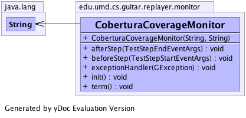

edu.umd.cs.guitar.replayer.monitor
Class CoberturaCoverageMonitor
java.lang.Object
 edu.umd.cs.guitar.replayer.monitor.GTestMonitor
edu.umd.cs.guitar.replayer.monitor.CoberturaCoverageMonitor
edu.umd.cs.guitar.replayer.monitor.GTestMonitor
edu.umd.cs.guitar.replayer.monitor.CoberturaCoverageMonitor
public class CoberturaCoverageMonitor
- extends edu.umd.cs.guitar.replayer.monitor.GTestMonitor
Generated by yDoc Evaluation Version
- Author:
- Bao N. Nguyen
-
-

|
Method Summary |
void |
afterStep(edu.umd.cs.guitar.replayer.monitor.TestStepEndEventArgs eStep)
|
void |
beforeStep(edu.umd.cs.guitar.replayer.monitor.TestStepStartEventArgs step)
|
void |
exceptionHandler(edu.umd.cs.guitar.exception.GException e)
|
void |
init()
|
void |
term()
|
| Methods inherited from class edu.umd.cs.guitar.replayer.monitor.GTestMonitor |
getReplayer, setReplayer |
| Methods inherited from class java.lang.Object |
clone, equals, finalize, getClass, hashCode, notify, notifyAll, toString, wait, wait, wait |
CoberturaCoverageMonitor
public CoberturaCoverageMonitor(java.lang.String sCoverageCleanFile,
java.lang.String sCoverageOutputDir)
- Parameters:
sCoverageOutputDir -
afterStep
public void afterStep(edu.umd.cs.guitar.replayer.monitor.TestStepEndEventArgs eStep)
- Specified by:
afterStep in class edu.umd.cs.guitar.replayer.monitor.GTestMonitor
beforeStep
public void beforeStep(edu.umd.cs.guitar.replayer.monitor.TestStepStartEventArgs step)
- Specified by:
beforeStep in class edu.umd.cs.guitar.replayer.monitor.GTestMonitor
exceptionHandler
public void exceptionHandler(edu.umd.cs.guitar.exception.GException e)
- Specified by:
exceptionHandler in class edu.umd.cs.guitar.replayer.monitor.GTestMonitor
init
public void init()
- Specified by:
init in class edu.umd.cs.guitar.replayer.monitor.GTestMonitor
term
public void term()
- Specified by:
term in class edu.umd.cs.guitar.replayer.monitor.GTestMonitor